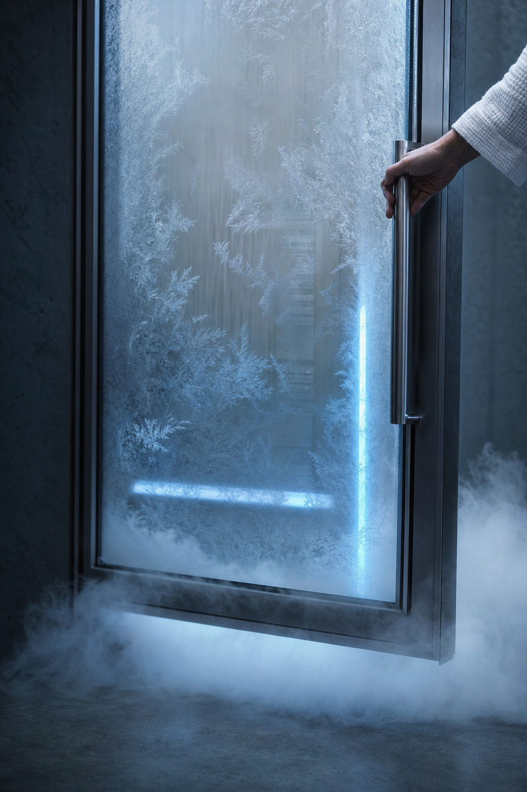
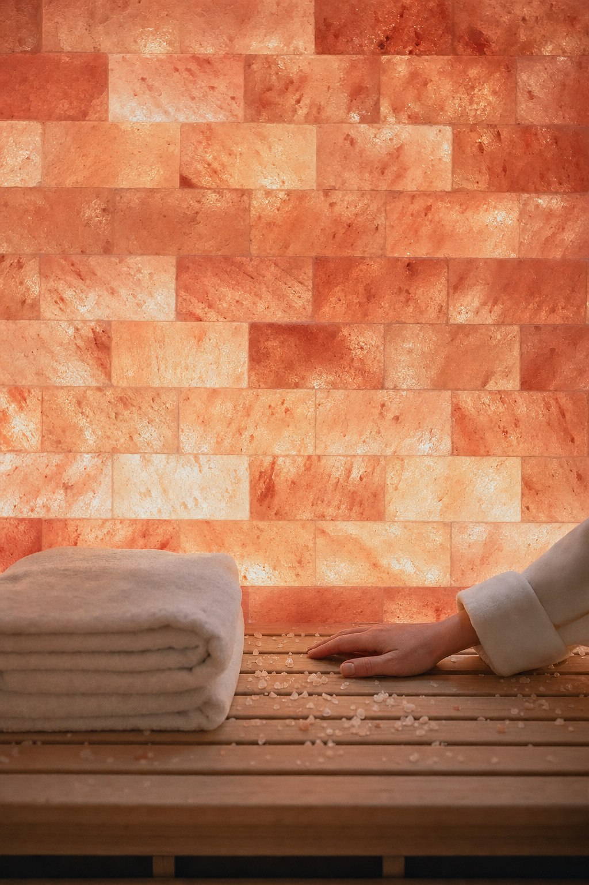

01 · The read
Every room has its own weather.
Allen, Justine — Nelson Taylor here. I direct and shoot brand content in Dallas–Fort Worth. Connor Pittman's Sept. 30 roundup in Community Impact is what sent me to your site: a celebration on Oct. 22, new equipment, and a med-spa menu running alongside the wellness side.
Then I read the menu, and it reads like a weather map. A cryo chamber, frost on the glass and a thin line of blue light inside. A hard-shell hyperbaric chamber with large viewing windows. A dry salt room. A red-light pod. A sauna cabin that fits six. Each one has its own light, its own texture, its own temperature.
I'm not here to say what any of it does. That's your expertise, and the conversation you have with your clients. A camera can show what each room looks like to walk into, and that's the whole idea: the rooms as atmospheres, one climate at a time.

02 · The idea
One room a week.
Five rooms make a format. Each week of the quarter belongs to one of them, and every one opens the same way: a door, a hand, the first look inside.
Then that room's own weather takes over. Vapour and frost in the cold. The curved window of the chamber. Salt up close. A single colour in the red light. Wood and warm light in the sauna. Same move, new climate, so the feed keeps a rhythm without anyone on your team having to be on camera.
Every cut is composed 9:16 from the first setup. The phone is the frame I'm shooting for, not a crop taken later.

03 · What we'd shoot
The spectrum.
One day, cold to heat, room by room around your bookings, on a day you choose. Empty rooms, vapour, salt, light, wood and hands. Your team and your clients stay off camera unless they want to be on it, and that's a conversation we'd have first.
-
No. 1 · the cold Creative direction — treatment frames, not final footage.
The cold
Frost on the glass, the thin blue line, cold air moving across the floor. Shot slow on the FX6.
-
No. 2 · the chamber Creative direction — treatment frames, not final footage.
The chamber
The curved window lit from inside, empty. A hand on the shell; the long shape of it from across the room.
-
No. 3 · the salt room Creative direction — treatment frames, not final footage.
The salt room
Salt at macro: the grain, the texture, the way the light sits in it. The quietest room, filmed like it.
-
No. 4 · the red light Creative direction — treatment frames, not final footage.
The red light
One colour, edge to edge. The outline of a hand against red; a robe on a hook.
-
No. 5 · the sauna Creative direction — treatment frames, not final footage.
The sauna
Wood grain, warm light, a towel folded on the bench, the door swinging shut.
-
No. 6 · the new equipment Creative direction — treatment frames, not final footage.
The new equipment
Hands and light only: a palm on the housing, a line of light crossing a surface, the room around it.
Alongside the video, the A7RV builds a stills bank from the same rooms and the same light all day: for the site, the grid and anything else that needs a photograph.
04 · The first look
Hands and light.
Community Impact's roundup mentions new equipment at Just Wellness. A new piece in the room deserves a first look of its own, and in a clinic the right first look is a quiet one.
So it's filmed the way the rest of the day is: hands and light only. A palm on the housing, a line of light travelling across a panel, the room settling around it. Nothing clinical on camera and nothing said on its behalf; just the object and the room.
And because it's the same move as every other room, it slots straight into the weekly format the day it posts.
05 · The day
Just the day.
Plainly, here's what it is.
- 01One shoot day at Just WellnessI direct and shoot it myself, room by room in Grapevine, around your bookings.
- 02Sony FX6 + Sony A7RVThe FX6 carries the motion; the A7RV covers stills and hybrid.
- 03Vertical-firstEvery deliverable is cut 9:16 for Reels, TikTok and Shorts.
- 04An edited set of vertical videos + a stills bankFrom the same day and the same light, built to run for a quarter.
- 05Two rounds of editsDelivered in about two weeks.
Anything beyond that is a conversation on a call.
06 · Behind the camera
Who's shooting.
I'm Nelson Taylor, and Taylormade Creative is my studio in Dallas–Fort Worth. I've spent fourteen years in design and creative direction, and these days most of that work is brand content: I direct it, shoot it on the FX6 and the A7RV, and cut it myself.
Recent work includes TONI&GUY Academy, Dreamcatchers Hair and a promo for It's a Secret Med Spa. Client work over the years includes Toni & Guy, Lava Cantina, KFC, IAS Academy and Curls, and I shipped one iOS app, Run It UP! Dallas.
A clinic is a careful place to bring a camera. Nobody is filmed who hasn't said yes, and the plan you're reading is the edit you'd get, because the person framing the shot is the person cutting it.
- Fourteen yearsdesign and direction
- FX6 + A7RVmotion and stills, one kit
- 9:16composed for the phone
- One personshoot through edit
07 · Whenever suits
No hurry at all. Nothing here needs an answer this week.
Take this page at whatever pace suits the season. If the idea feels like Just Wellness, I'd be glad to spend twenty minutes on a call and walk the spectrum with you, room by room. Strike anything that doesn't fit, and add anything I've missed.
And if the timing isn't right, "not yet" is a perfectly good answer.
Write to NelsonFounder & Creative Director · Taylormade Creative
(817) 707‑1291 · taylormademd@gmail.com
www.taylormadecreative.net · @taylormade_creative